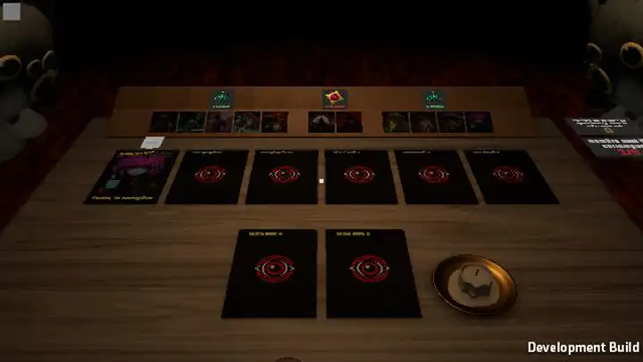

T19, points 2 à 4 de Wouh, d'un coup car c'est la même seconde : 4 la caméra en 3D pendant l'enchaînement pour voir la carte et le chat ensemble, 2 un micro-silence juste avant le « splatch », 3 le chat aplati figé une demi-seconde de trop.
Aujourd'hui (vidéo ci-dessous, vraie partie) : tout se joue en vue de dessus. Le chat est bien aplati, environ 3 s après le début, mais hors champ, pendant que la carte se retourne : personne ne le voit. Il n'y a pas non plus de son de « splatch » (le son d'enchaînement des rôles est vide).
Proposé ici : le chat lance son animation pour que son écrasement tombe pile quand la carte s'écrase sur la table. Images : vraie scène rendue depuis le jeu (vrais chats, vraie carte, vraie animation de l'artiste), 3 joueurs. La carte qui se dresse puis s'écrase est une proposition (en vue de dessus elle grossit vers la caméra, ça ne marche plus en 3D). Les sons sont provisoires, synthétisés dans la page : appuie sur « ▶ Écouter » sous un cadre.

Vraie partie (autoplay, 3 joueurs, vue du joueur 3) : la Dryade est enchaînée.
Même moment sur chaque cadre, avec le silence S1 et le gel F1 ci-dessous.
On reste dans la vue assise ; ta tête se tourne seule vers le chat enchaîné, la carte se dresse au milieu de la table. Le plus « vécu », mais le chat reste petit et loin (il est assis au bord, plus bas que la table).
La caméra quitte ta place et monte au-dessus de la table, plongée sur le chat et la carte, tous les deux en entier (on voit enfin la crêpe). Le même cadrage chez tout le monde : la capture d'écran qu'on se partage.
La carte se dresse et montre le rôle dans ta vue assise (K1), puis, quand elle tombe, coupe nette sur un gros plan du chat pour le splatch et le gel.
Plan K2 pour comparer. La barre sous le cadre montre le volume (sans casque : tout se lit sur la barre).
Un quart de seconde avant l'impact, tout le son s'arrête d'un coup (ambiance, souffle de la carte), puis le splatch tombe dans le vide.
Pendant la chute, le son s'étouffe et s'éteint (comme une inspiration retenue), un quart de seconde de rien, puis le splatch.
Le splatch par-dessus l'ambiance, pour entendre ce que le silence apporte.
Plan K2, silence S1. Tout s'arrête sur la pose la plus plate, puis reprend.
0,5 s d'image arrêtée sur la crêpe, rien ne bouge, puis il se relève enchaîné.
Au splatch, la caméra fait un petit bond vers le chat et tient pendant le gel : l'image arrêtée devient une photo cadrée.
0,9 s : assez long pour qu'on se demande si le jeu a planté, c'est là que ça devient drôle (ou gênant).
Avec K1 ou K3 on ne voit pas son propre chat.
La caméra sort de ton corps pour le plan de l'enchaînement : tu te vois t'écraser, de face.
Tu vois la carte s'écraser devant toi et ta vue s'écrase avec (elle tombe d'un coup au ras de la table, figée), puis remonte.